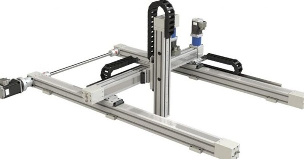
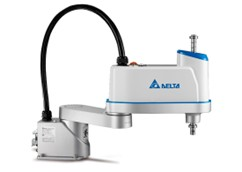
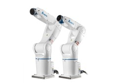
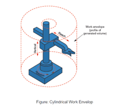
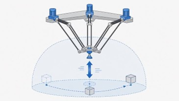
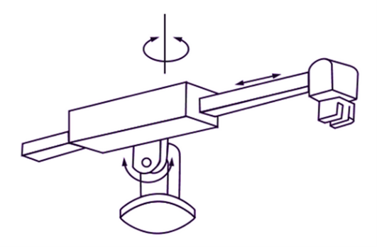
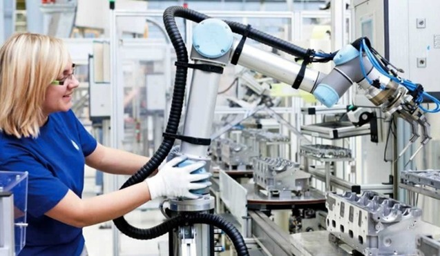

Sensoriamento
Robôs Cartesianos
Um robô cartesiano é um robô industrial que opera movimentando-se em linhas retas, nos eixos X, Y, Z (tal qual em um plano cartesiano, por isso seu nome). Ele é ideal para tarefas repetitivas e de alta precisão, como carregar e descarregar peças, paletização, montagem e corte.
O preço de um robô cartesiano varia de acordo com seu tamanho, capacidade de carga, velocidade e precisão, além do nível de precisão, acabando com um custo entre R$15.000 e R$400.000. Marcas incluem FANUC, Yaswaka, Igus e outros.

Robôs SCARA
Um robô Selective Compliance Assembly Robot Arm (SCARA) é um robô industrial com um braço articulado com movimentos restritos ao plano horizontal. Compacto e fácil de integrar, ele oferece rapidez, repetibilidade e precisão para processos como encaixe de placas de circuito, montagem de peças pequenas, manuseio e embalagem.
O preço de um robô SCARA varia de R$40.000 a R$450.000. Marcas incluem HIWIN, Delta, EPSON.

Robôs Articulados

Um robô articulado é um modelo fixo que possui braços com múltiplas juntas rotativas. E é justamente essa característica que garante grande liberdade de movimento e capacidade de atuar em diferentes ângulos e posições. Por isso costumam ser aplicados em: Soldagem de carrocerias, pintura automotiva, montagem de componentes, e manipulação de materiais.
O preço de um robô articulado varia de R$70.000 a R$500.000+. Marcas incluem HIWIN, YLM, Delta.
Robôs Cilíndricos
Um robô cilíndrico é projetado para realizar movimentos circulares em torno de um eixo de rotação, combinando deslocações lineares em eixos verticais. Ele promove versatilidade em tarefas de manuseio, montagem e operações em locais de difícil acesso, com boa relação entre alcance e ocupação de espaço, tudo isso com precisão e repetibilidade. Costuma ser aplicado em: montagem de componentes em diferentes alturas, manipulação de peças médias, operações de soldagem e alimentação de máquinas com peças em diferentes níveis.
O preço de um robô cilíndrico varia de R$80.000 a R$220.000. Marcas incluem Epson, Yamaha Robotics e Denso Robotics.

Robôs Delta
Um robô delta tem estrutura leve, braços conectados a uma base fixa em comum, garantindo alta velocidade e precisão em movimentos repetitivos, principalmente na horizontal. Na prática, encontramos eles em uso para: Operações de pegar e posicionar a peça, organizações de componentes em alta velocidade, processos de embalagem e operações auxiliares de montagem de peças pequenas, como fixadores, conectores ou componentes de chicotes elétricos.
O preço de um robô delta varia de R$50.000 a R$350.000. Marcas incluem Igus e Schneider Electric.

Robôs Polares
A base de um robô polar permite movimentações de rotação combinadas a deslocamentos lineares e articulações. Esse robô fixo promove um amplo alcance e flexibilidade de movimentos, sendo capaz de manipular peças em grandes volumes de trabalho e em diferentes ângulos. Ele é ideal para processo de longo alcance que não precisam de alta precisão, como: manipulação de moldes e ferramentas pesadas, processo de fundição, operações de paletização em larga escala.
O preço de um robô polar varia de R$135.000 a R$970.000. Marcas incluem ABB e NACHI.

Robôs Colaborativos
Os robôs colaborativos, ou cobots, são soluções de robótica industrial que trabalham lado a lado com operadores humanos de forma segura, sem a necessidade de barreiras de proteção. Sua função é semelhante à de um robô articulado, com sensores adicionados para segurança de trabalhadores. Seu uso se destaca na: montagem assistida, inspeção de qualidade, pick & place em linhas mistas, e embalagem e etiquetagem.
O preço de um robô colaborativo varia de R$60.000 até mais de R$920.000. Marcas incluem DENKER, FANUC, e Autêntica Engenharia.
